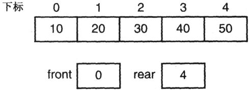
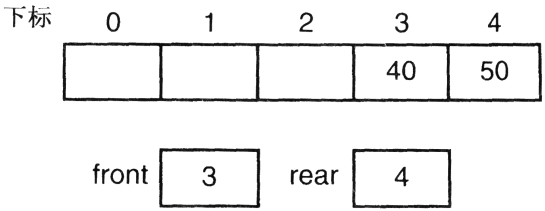
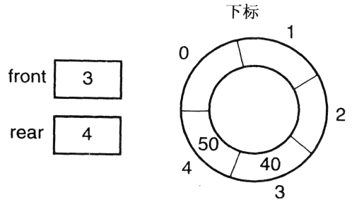
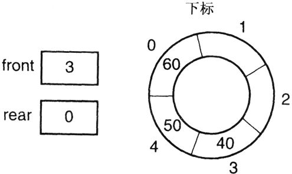
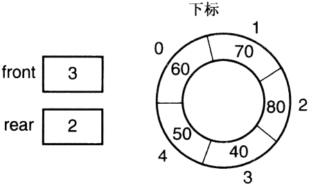
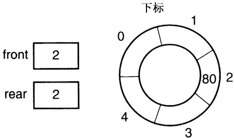
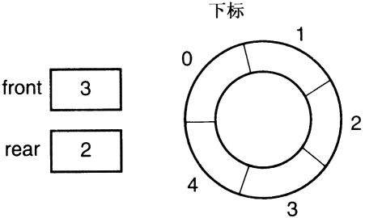
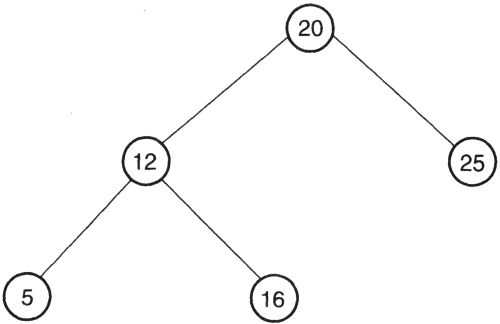
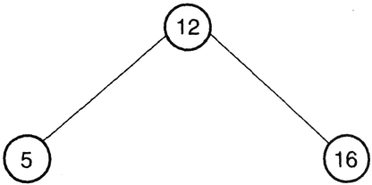

Chapter 17 Classic Abstract Data Types
There are several abstract data types (ADTs) whose properties make them so useful that they are indispensable components of a C programmer's toolkit: the list, stack, queue, and tree. Linked lists were discussed in Chapter 12; this chapter covers the remaining ADTs.
The first part of the chapter describes the properties and basic implementations of these structures. The chapter ends by discussing how to improve the flexibility of their implementations and the resulting safety compromises.
17.1 Memory Allocation
There is one decision that must be made for all ADTs—how to obtain the memory that stores the values. There are three choices: a static array, a dynamically allocated array, and a dynamically allocated linked structure.
The static array imposes a fixed size on the structure. Moreover, this size must be determined at compile time. However, it is the simplest technique and least prone to error.
Using a dynamic array lets you wait until runtime to decide how big to make the array. It also lets you dynamically resize the array when needed by allocating a new, larger array, copying the values from the original array to the new one, and then deleting the original array. In deciding whether or not to use a dynamic array, you must weigh the increased complexity against the flexibility of an ADT without a fixed, predetermined size limit.
Finally, linked structures offer the greatest flexibility. Each element is individually allocated when needed, so there isn't any maximum size restriction other than the memory available on the machine. However, a linked structure consumes extra memory for the links, and traversing a linked structure to access a specific element is not as efficient as accessing a value in an array.
17.2 Stacks
The stack is a data structure characterized by its Last-In First-Out or LIFO behavior. Partygoers are well acquainted with stacks; the host's driveway is a stack of cars. The last car parked is the first one that must be removed, and the first car that was parked cannot be moved until all the others are gone.
17.2.1 Stack Interface
The basic stack operations are usually called push and pop. Push adds a new value to the top of the stack, and pop removes the topmost value and returns it. Access is provided only to the top value on the stack.
In the traditional stack interface, the only way to access the top element is to remove it. An alternative interface for the stack has three basic operations: push, pop, and top. Push operates as described above, but pop simply removes the top element— its value is not returned. Top returns the value of the top element without removing it from the stack.
TIP
The traditional pop function has a side effect: it changes the state of the stack. It is also the only way to access the top element of the stack. Having a top function lets you repeatedly access the value on the top of the stack without having to save it in a local variable. This capability is another example of the benefits of designing functions without side effects.
We need two additional functions to use the stack. An empty stack cannot be popped, so we need a function to tell us if the stack is empty. A stack implemented with a maximum size limit should have a function that tells us whether the stack is full.
17.2.2 Implementing a Stack
The stack is one of the easiest ADTs to implement. The basic approach is to store the values into successive locations in an array as they are pushed. You must keep track of the subscript of the value that was most recently pushed. To pop the stack you simply decrement this value. The header file in Program 17.1 describes the nontraditional interface for a stack module.
TIP
Note that the interface contains only the information that a client needs to use the stack; specifically, it does not reveal how the stack is implemented. In fact, with a minor modification that we discuss later, this same header file can be used with all three implementation techniques. Defining the interface in this manner is good practice because it prevents the client from making assumptions that depend on a particular implementation.
/*
** Interface for a stack module
*/
#define STACK_TYPE int /* Type of value on the stack */
/*
** push
** Pushes a new value on the stack. The argument is the value
** to be pushed.
*/
void push( STACK_TYPE value );
/*
** pop
** Pops a value off of the stack, discarding it.
*/
void pop( void );
/*
** top
** Returns the topmost value on the stack without changing the
** stack.
*/
STACK_TYPE top( void );
/*
** is_empty
** Returns TRUE if the stack is empty, else FALSE.
*/
int is_empty( void );
/*
** is_full
** Returns TRUE if the stack is full, else FALSE.
*/
int is_full( void );Program 17.1 Stack interface
stack.h
TIP:
An interesting feature of this interface is its declaration of the type of value to be stored on the stack. The client would modify this declaration to suit his needs before compiling the stack module.
An Arrayed Stack
Our first implementation, in Program 17.2, uses a static array. The size of the stack is given in a #define, which must be set by the client before the module is compiled. This restriction is relaxed in the stack implementations discussed later.
TIP
Everything that is not part of the external interface is declared static to prevent the client from accessing the values in any way other than through the defined interface.
/*
** A stack implemented with a static array. The array size can
** be adjusted only by changing the #define and recompiling
** the module.
*/
#include "stack.h"
#include <assert.h>
#define STACK_SIZE 100 /* Max # of values on the stack */
/*
** The array that holds the values on the stack, and a pointer
** to the topmost value on the stack.
*/
static STACK_TYPE stack[ STACK_SIZE ];
static int top_element = -1;
/*
** push
*/
void
push( STACK_TYPE value )
{
assert( !is_full() );
top_element += 1;
stack[ top_element ] = value;
}
/*
** pop
*/
void
pop( void )
{
assert( !is_empty() );
top_element -= 1;
}
/*
** top
*/
STACK_TYPE top( void )
{
assert( !is_empty() );
return stack[ top_element ];
}
/*
** is_empty
*/
int
is_empty( void )
{
return top_element == -1;
}
/*
** is_full
*/
int
is_full( void )
{
return top_element == STACK_SIZE - 1;
}Program 17.2 Stack implemented with a static array
a_stack.c
The variable top_element holds the subscript of the value at the top of the stack. It is initialized to -1 to indicate that the stack is empty. By incrementing this variable in push before storing the new value, top_element always contains the subscript of the topmost value. If it were initialized to 0, top_element would be keeping track of the next available space in the array. This approach works but is slightly less efficient because a subtraction is required in order to access the top element.
A traditional pop function, written with straightforward code, would look like this:
STACK_TYPE
pop( void )
{
STACK_TYPE temp;
assert( !is_empty() );
temp = stack[ top_element ];
top_element -= 1;
return temp;
}The ordering of these operations is important. top_element is decremented after the value is copied from the array, in contrast to push, where it is incremented before copying the value into the array. We can make the pop function more efficient by eliminating the temporary variable and the copying that goes with it:
assert( !is_empty() );
return stack[ top_element-- ];pop need not erase values from the stack—simply decrementing the top pointer is enough because the old value can no longer be accessed by the client.
TIP
A noteworthy feature of this stack module is its use of assert to guard against illegal operations, such as popping a stack that is already empty or pushing another value on a stack that is full. The assertions call the is_full and is_empty functions rather than testing top_element themselves. This approach makes it easier to change the implementation should you decide later to detect empty and full differently.
Assertions are appropriate for errors that the client cannot recover from. But if the client wants to be sure that the program doesn't abort, the program must check whether there is space on the stack before attempting to push a new value. Therefore the assertions must only check things that the client can also check.
A Dynamically Arrayed Stack
The next implementation uses a dynamic array, but first we need to add two new functions in the interface:
/*
** create_stack
** Create the stack. The argument specifies
** how many elements the stack can hold.
** NOTE; this does not apply to the static
** array version of the stack.。
*/
void create_stack( size_t size );
/*
** destroy_stack
** Destroy the stack. This frees the memory
** used by the stack. NOTE: this does not
** apply to the static array stack either.
*/
void destroy_stack( void );The first function creates the stack with whatever size the user passes as an argument. The second deletes the stack, and is needed to avoid memory leaks.
These declarations may be added to stack.h even though the previous stack implementation does not define either function. Note that there is no danger of a client mistakenly calling either of these functions for a statically arrayed stack because they do not exist in that module.
TIP
A better approach is to implement the unneeded functions in the array module as stubs that do nothing. The interfaces for the two implementations will then be identical, thus making it easier to switch from one implementation to another.
Interestingly, using a dynamically allocated array does not change the implementation much (see Program 17.3). The array has been replaced by a pointer, and the stack_size variable has been introduced to remember the size of the stack. The default initialization will make both of these zero.
The create_stack function first checks that the stack was not already created. It then allocates the requested amount of memory and verifies that the allocation was successful. After destroy_stack frees the memory, it sets the size and pointer variables back to zero so that another stack can be created later.
The only changes to the rest of the module are the comparison to the stack_size variable rather than the STACK_SIZE constant in is_full and the addition of an assertion to both is_full and is_empty. The assertion prevents any of the stack functions from being called before the stack has been created. The other stack functions don't need the new assertion because they all call one of these two functions.
/*
** A stack implemented with a dynamically allocated array.
** The array size is given when create is called, which must
** happen before any other stack operations are attempted.
*/
#include "stack.h"
#include <stdio.h>
#include <stdlib.h>
#include <malloc.h>
#include <assert.h>
/*
** The array that holds the values on the stack, and a pointer
** to the topmost value on the stack.
*/
static STACK_TYPE *stack;
static size_t stack_size;
static int top_element = -1;
/*
** create_stack
*/
void
create_stack( size_t size )
{
assert( stack_size == 0 );
stack_size = size;
stack = malloc( stack_size * sizeof( STACK_TYPE ) );
assert( stack != NULL );
}
/*
** destroy_stack
*/
void
destroy_stack( void )
{
assert( stack_size > 0 );
stack_size = 0;
free( stack );
stack = NULL;
}
/*
** push
*/
void
push( STACK_TYPE value )
{
assert( !is_full() );
top_element += 1;
stack[ top_element ] = value;
}
/*
** pop
*/
void
pop( void )
{
assert( !is_empty() );
top_element -= 1;
}
/*
** top
*/
STACK_TYPE top( void )
{
assert( !is_empty() );
return stack[ top_element ];
}
/*
** is_empty
*/
int
is_empty( void )
{
assert( stack_size > 0 );
return top_element == -1;
}
/*
** is_full
*/
int
is_full( void )
{
assert( stack_size > 0 );
return top_element == stack_size - 1;
}Program 17.3 Stack implemented with a dynamic array
d_stack.c
CAUTION!
Using assert to check the success of a memory allocation can lead to unexpected program aborts in environments where memory is limited. An alternative strategy would be to return a value from create_stack indicating whether or not it was successful. In the event of a failure, the client program could try again with a smaller size.
A Linked Stack
Because only the top element on a stack is accessible, a singly linked list works well for a linked stack. Pushing a value on the stack is accomplished by adding the new value at the start of the list. Popping the stack removes the first value from the list. The value at the head of the list is always easily accessible.
In the implementation shown in Program 17.4, there isn't any need for a create_stack function, but destroy_stack can be implemented to empty the stack. Because the memory to hold the values is dynamically allocated, it must be freed to avoid memory leaks.
/*
** A stack implemented with a linked list. This stack has no size
** limit.
*/
#include "stack.h"
#include <stdio.h>
#include <stdlib.h>
#include <malloc.h>
#include <assert.h>
#define FALSE 0
/*
** Define a structure to hold one value. The link field will
** point to the next value on the stack.
*/
typedef struct STACK_NODE {
STACK_TYPE value;
struct STACK_NODE *next;
} StackNode;
/*
** A pointer to the topmost node on the stack.
*/
static StackNode *stack;
/*
** create_stack
*/
void
create_stack( size_t size )
{
}
/*
** destroy_stack
*/
void
destroy_stack( void )
{
while( !is_empty() )
pop();
}
/*
** push
*/
void
push( STACK_TYPE value )
{
StackNode *new_node;
new_node = malloc( sizeof( StackNode ) );
assert( new_node != NULL );
new_node->value = value;
new_node->next = stack;
stack = new_node;
}
/*
** pop
*/
void
pop( void )
{
StackNode *first_node;
assert( !is_empty() );
first_node = stack;
stack = first_node->next;
free( first_node );
}
/*
** top
*/
STACK_TYPE top( void )
{
assert( !is_empty() );
return stack->value;
}
/*
** is_empty
*/
int
is_empty( void )
{
return stack == NULL;
}
/*
** is_full
*/
int
is_full( void )
{
return FALSE;
}Program 17.4 Stack implemented with a linked list
l_stack.c
The structure is needed to bundle a value and a pointer together, and the stack variable is now a pointer to one of these structures. The stack is empty when this pointer is NULL, as it is initially.
TIP
The destroy_stack function pops values until the slack is empty. Again, notice that existing is_empty and pop functions are called rather than repeating the needed code.
create_stack is an empty function, and because this stack cannot fill up, is_full always returns false.
17.3 Queues
A queue has a different ordering than a stack: queues are First-In, First-Out or FIFO structures. Waiting lines are usually queues. The person that arrived first is at the head of the line, and new arrivals join the line at its end.
17.3.1 Queue Interface
Unlike stacks, there aren't generally accepted names for the queue functions that perform insertion and removal of values, so we will use insert and delete. Also, there is not complete agreement on whether insertions occur at the front of the queue or at the rear. In principle it doesn't make any difference what you call the end of the line where insertions occur, but inserting at the rear and removing from the front of the queue may be easier to remember because this method more accurately describes our human experiences with waiting lines.
In the traditional interface, delete removes the value from the front of the queue and returns it. In the alternate interface, delete takes the value out of the queue but does not return it; the first function returns the first value in the queue without removing it.
The header file in Program 17.5 defines the alternate interface. It includes prototypes for the create_queue and destroy_queue functions needed by the linked and dynamic implementations.
/*
** Interface for a queue module
*/
#include <stdlib.h>
#define QUEUE_TYPE int/* Type of value in the queue */
/*
** create_queue
** Creates a queue. The argument indicates the maximum number
** of values that the queue will hold. NOTE: this applies only
** to the dynamically allocated array implementation.
*/
void create_queue( size_t size );
/*
** destroy_queue
** Destroys a queue. NOTE: this applies only to the linked and
** dynamically allocated array implementations.
*/
void destroy_queue( void );
/*
** insert
** Adds a new value on the queue. The argument is the value
** to be inserted.
*/
void insert( QUEUE_TYPE value );
/*
** delete
** Removes a value from the queue, discarding it.
*/
void delete( void );
/*
** first
** Returns the first value on the queue without changing the
** queue itself.
*/
QUEUE_TYPE first( void );
/*
** is_empty
** Returns TRUE if the queue is empty, else FALSE
*/
int is_empty( void );
/*
** is_full
** Returns TRUE if the queue is full, else FALSE
*/
int is_full( void );Program 17.5 Queue interface
queue.h
17.3.2 Implementing a Queue
Queues are more difficult lo implement than stacks. Two pointers axe needed—one for the front of the line and one for the rear. Also, arrays are not as well suited to queues as they are to stacks because of the way queues use memory.
A stack is always rooted at one end of the array. A queue, however, uses different elements of the array as values are inserted and removed. Consider a queue implemented as an array of five values. Here is how it will look after the values 10, 20, 30, 40, and 50 have been inserted.

After three removals, it looks like this:

The array is not full, but there isn't any room at its end to insert new values.
One solution to this problem is to move the remaining elements back toward the beginning of the array when a value is removed. The copying overhead makes this approach impractical, especially for large queues.
A better alternative is to have the rear of the queue "wrap around" to the front of the array so that new values can be stored in the space made available by earlier removals. This method is often called a circular array. The following diagram illustrates this concept

Inserting another value gives this result:

The circular array is easy to implement—when the rear subscript moves off the end of the array, set it back to zero, as is done in the following code.
rear += 1;
if( rear >= QUEUE_SIZE )
rear = 0;The following approach has the same result.
rear = ( rear + 1 ) % QUEUE_SIZE;The same technique must be applied when incrementing front.
The circular array introduces a problem of its own, though. It is more complex to determine whether a circular array is full or empty. Suppose the queue were full, as this one is:

Note the values of front and rear; three and two, respectively. If four values are removed from the queue, front will be incremented four times, giving this configuration:

When the last value is removed, the queue looks like this:

The problem is that the values of front and rear are now the same as they were when the queue was full. Any comparison of them that is true when the queue is empty will also be true when it is full, so we cannot test for an empty queue by comparing front and rear.
There are two ways to solve this problem. The first is to introduce a new variable that counts how many values are in the queue. It is incremented with each insertion and decremented with each removal. Testing this variable to determine whether the queue is empty or full is easy.
The second approach is to redefine the meaning of full. If one element in the array is always left unused, then when the queue is "full" the front and rear values will be different than when the queue is empty. By not allowing the array to become completely full, the problem is avoided.
One minor question remains: What values should front and rear have when the queue is empty? When the queue has one value in it, we want front and rear to both point to the value. An insertion increments rear, so in order for rear to point to the value after the first insertion, rear must be one less than front when the queue is empty. Fortunately, this state is also the result of removing the last value from the queue, so removing the last value is not a special case.
The queue is empty when
( rear + 1 ) % QUEUE_SIZE == frontBecause we must stop inserting values just before front and rear reach this relationship, the queue must be called "full" when
( rear + 2 ) % QUEUE_SIZE == frontAn Arrayed Queue
Program 17.6 implements a queue with a static array. It uses the "don't completely fill the array" technique of distinguishing between an empty and a full queue.
/*
** A queue implemented with a static array. The array size can
** be adjusted only by changing the #define and recompiling
** the module.
*/
#include "queue.h"
#include <stdio.h>
#include <assert.h>
#define QUEUE_SIZE 100/* Max # of values on the queue */
#define ARRAY_SIZE ( QUEUE_SIZE + 1 )/* Size of array */
/*
** The array that holds the values on the queue, and pointers
** to the front and rear of the queue.
*/
static QUEUE_TYPE queue[ ARRAY_SIZE ];
static size_t front = 1;
static size_t rear = 0;
/*
** insert
*/
void
insert( QUEUE_TYPE value )
{
assert( !is_full() );
rear = ( rear + 1 ) % ARRAY_SIZE;
queue[ rear ] = value;
}
/*
** delete
*/
void
delete( void )
{
assert( !is_empty() );
front = ( front + 1 ) % ARRAY_SIZE;
}
/*
** first
*/
QUEUE_TYPE first( void )
{
assert( !is_empty() );
return queue[ front ];
}
/*
** is_empty
*/
int
is_empty( void )
{
return ( rear + 1 ) % ARRAY_SIZE == front;
}
/*
** is_full
*/
int
is_full( void )
{
return ( rear + 2 ) % ARRAY_SIZE == front;
}Program 17.6 Queue implemented with a static array
a_queue.c
The QUEUE_SIZE constant is set to the maximum number of values that the client wants on the queue. Because this implementation never fills the queue, ARRAY_SIZE is defined as one more than QUEUE_SIZE. The functions are straightforward implementations of the techniques we discussed.
We could have used any values to initialize front and rear as long as rear is one less than front. These particular values leave the first element of the array unused until the first time rear wraps around, but so what?
Dynamically Arrayed and Linked Queues
The modifications needed to dynamically allocate the array for a queue are analogous to those needed for a stack. Consequently, its implementation is left to the exercises.
The linked queue is simpler in some respects than its arrayed cousins. It doesn't use an array, so the problems of the circular array disappear. Testing for empty is simply a matter of seeing if the list is empty. The test for full always returns false. This implementation is also left as an exercise.
17.4 Trees
A complete description of all the varieties of trees is beyond the scope of this book. However, the techniques for implementing trees are illustrated quite nicely by describing one very useful variety; the binary search tree.
A tree is a structure that is either empty or has a value and zero or more children, each of which is also a tree. This recursive definition implies correctly that there isn't an inherent limit to the height of a tree. A binary tree is a specialized form of tree in which each node has at most two children, named left and right. A binary search tree has one additional property: The value in each node is greater than all of the values in its left subtree and less than all of the values in its right subtree. Note that this definition precludes having duplicate values in the tree. These properties make binary search trees an excellent tool for quickly locating data using a key. Figure 17.1 is an example of a binary search tree. Each node in the tree has exactly one parent (the node above it), and zero, one, or two children (the nodes directly beneath it). The only exception is the topmost node, called the root of the tree, which doesn't have a parent. The nodes without children are called leaf nodes or leaves. Trees are drawn with the root at the top and the leaves at the bottom [1] .

Figure 17.1 Binary search tree
17.4.1 Insertions into a Binary Search Tree
When a new value is to be added to a binary search tree, it must be put in the proper position so that the search tree property is maintained. Fortunately, this task is simple. The basic algorithm works like this:
If the tree is empty:
Insert the new value as the root node
Otherwise:
If the new value is less than the current node's value:
Insert the new value in the left subtree of the current node
Otherwise:
Insert the new value in the right subtree of the current node.The recursive expression of this algorithm is a direct consequence of the recursive definition of the tree.
To insert 15 into the tree in Figure 17.1, compare 15 with 20. It is less so the value is inserted into the left subtree. This subtree's root is 12, so the process is repeated with this node: compare 15 with 12. This time 15 is greater, so we insert 15 into 12's right subtree. We now compare 15 with 16. It is less, so we insert 15 into the left subtree of node 16. But this subtree is empty, so the node containing 15 becomes the root of the new left subtree of node 16.
TIP
Because the recursion occurs at the end of the algorithm (tail recursion), it is more efficient to implement the algorithm iteratively.
17.4.2 Deletions from a Binary Search Tree
Removing a value from a tree is more difficult than removing a value from a stack or a queue. Deleting a node from the middle of a tree disconnects its subtrees from the rest of the tree—we must reconnect them or they will be lost.
There are three cases that we must handle: deleting nodes with no children, with one child, and with two children. The first situation is easy. Deleting a leaf node doesn't disconnect any subtrees, so there is nothing to reconnect. Deleting a node with only one child is almost as easy: the parent of the deleted node inherits the child. This solution prevents that subtree from being disconnected, yet preserves the ordering of the binary search tree.
The last case is more difficult. If a node has two children, its parent cannot inherit both of them. One strategy is to not delete the node at all. Instead, the largest value in the node's left subtree is deleted and that value replaces the one that was originally to have been deleted. The deletion functions are implemented as exercises.
17.4.3 Searching a Binary Search Tree
Because of the ordering imposed on a binary search tree, searching the tree for a particular value is easy. Here is the algorithm:
If the tree is empty:
The value is not in the tree
Otherwise:
If the root contains the value:
The value is found
Otherwise:
If the value is less than the root:
Search the left subtree
Otherwise:
Search the right subtreeThe recursion in this algorithm is also tail recursion, so an iterative implementation is preferred.
What do you do when the value is found? It depends on the client's needs. Sometimes, all that is required is to check for membership. In this case, returning a true/false status is adequate. If the data is a structure that is identified by a key field, the client will want to access the non-key members of the structure that was located, which requires returning a pointer to the structure.
17.4.4 Tree Traversals
Trees do not limit you to accessing only one value as do stacks and queues. Thus trees have another basic operation—the traversal. When you examine all of the nodes in a tree, you are traversing the tree. There are several different orders in which the nodes may be traversed, the most common being pre-order, in-order, post-order, and breadth-first. All traversals start at the root of the tree or at the node which is the root of whatever subtree you wish to traverse.
A pre-order traversal examines the value in the node and then recursively traverses the left and right subtrees. For example, a pre-order traversal of the tree

would begin by processing the value 20. We then traverse the left subtree:

After processing the value 12, we would traverse its left subtree
and process the value 5. Its left and right subtrees are empty, so we have now completed this subtree.
Having finished the left subtree of node 12, we continue with its right subtree
and process the value 16. Both of its subtrees are also empty, which means we have completed the subtree whose root is 16 and the subtree whose root is 12.
Having finished the left subtree of 20, the next step is to process its right subtree:
Processing the value 25 completes the traversal.
For a larger example, consider the binary search tree in Figure 17.1 If each node's value is printed when the node was examined, the output of a pre-order traversal would be: 20, 12, 5, 9, 16, 17, 25, 28, 26, 29.
An in-order traversal first traverses the left subtree, then examines the value in the node, and traverses the right subtree last. An in-order traversal of the tree in Figure 17.1 would examine the nodes in this order 5, 9, 12, 16, 17, 20, 25, 26, 28, 29.
A post-order traversal traverses the left and right subtrees first and examines the node's value last. A post-order traversal of the same tree would examine the nodes in this order: 9, 5, 17, 16, 12, 26, 29, 28, 25, 20.
Finally, a breadth-first traversal examines the nodes of the tree level by level. First the root is processed, then its children, then all of its grandchildren, and so forth. Traversing the sample tree in this manner would examine the nodes in this order: 20, 12, 25, 5, 16, 28, 9, 17, 26, 29. Although the first three traversals are easily implemented as recursive functions, the breadth-first traversal is an iterative algorithm that uses a queue. The exercises describe it in more detail.
17.4.5 Binary Search Tree Interface
The interface in Program 17.7 prototypes the function for inserting values into a binary search tree. It also includes a find function to find a specific value in the tree, which returns a pointer to the value that was found. Only one traversal function is defined, because the interfaces for the remaining ones differ in name only.
/*
** 二叉搜索树模块的接口
*/
#define TREE_TYPE int /* Interface for a binary search tree module */
/*
** insert
** Add a new value to the tree. The argument is the value
** to be added and must not already exist in the tree.
*/
void insert( TREE_TYPE value );
/*
** find
** Searches for a specific value, which is passed as the first
** argument.
*/
TREE_TYPE *find( TREE_TYPE value );
/*
** pre_order_traverse
** Does a pre-order traversal of the tree. The argument is a
** pointer to a callback function that will be called for
** each node in the tree, with the value passed as an argument.
*/
void pre_order_traverse(void (*callback)( TREE_TYPE value ));Program 17.7 Binary search tree interface
tree.h
17.4.6 Implementación de un árbol de búsqueda binaria
Although linked tree implementations are by far the most common, it is possible to store a binary search tree in an array. Of course, the fixed length of the array limits the number of elements that can be added to the tree, but if you use dynamic allocation you can create a larger space and copy the values into it when the original array overflows.
An Arrayed, Binary Search Tree
The key to representing a tree in an array is co use subscripts to locate parents and children of a particular value. The rules are easy:
The parent of node N is node N/2.
The left child of node N is node 2N.
The right child of node N is node 2N + 1.The formula for the parent works because the integer division operator truncates any fractional part.
CAUTION!
Alas, there is a minor problem. These rules assume that the root of the tree is node one, but C arrays begin with subscript zero. The easiest solution is to simply ignore the first element of the array. If the elements are so large that this approach would waste too much space, then you can use these alternate rules for zero-based array subscripts instead:
The parent of node N is node (N + 1)/2 - 1.
The left child of node N is node 2N + 1.
The right child of node N is node 2N + 2.Program 17.8 is a binary search tree implemented with a static array. There are several points of interest in this implementation. It uses the simpler rules for determining children so the array is declared one larger than the advertised size and its first element is ignored. Functions are defined to compute the left and right children of a node. Even though the computation is simple, the function names make the code that use them much clearer. These functions also simplify the task of modifying the module to use the alternate set of rules.
This implementation uses the value zero to indicate a node that is not being used. If zero is a legitimate data value, a different value must be chosen and the array elements must be initialized dynamically. Another technique is to have a companion array of boolean values to indicate which nodes are in use.
A problem with an arrayed tree is that the space in the array is often not used effectively. Space is wasted because new values must be inserted at specific places in the tree and cannot just be put wherever there happens to be space.
To illustrate, suppose an array of 100 elements is used to hold a tree. If the values 1, 2, 3, 4, 5, 6, and 7 are inserted in that order, they will be stored in locations 1, 2, 4, 8, 16, 32, and 64, respectively. But now the value 8 cannot be inserted because the right child of 7 would be stored in location 128, and the array is not that large. Whether or not this problem actually happens depends entirely on the order in which the values are inserted. If the same values were inserted in this order, 4, 2, 1, 3, 6, 5, and 7, they would occupy locations 1 through 7 of the array, and the value 8 could be inserted without difficulty.
With a dynamically allocated array, we can reallocate the array when more space is needed. This technique is not a very good solution to the problem of an unbalanced tree, though, because each new insertion requires the array size to be doubled, and the space available for dynamic memory allocation will soon be exhausted. A better solution is to use a linked binary tree rather than an array.
/*
** A binary search tree implemented with a static array. The
** array size can be adjusted only by changing the #define and
** recompiling the module.
*/
#include "tree.h"
#include <assert.h>
#include <stdio.h>
#define TREE_SIZE 100 /* Max # of values in the tree */
#define ARRAY_SIZE ( TREE_SIZE + 1 )
/*
** The array that holds the values in the tree.
*/
static TREE_TYPE tree[ ARRAY_SIZE ];
/*
** left_child
** Compute the subscript of the left child of a node.
*/
static int
left_child( int current )
{
return current * 2;
}
/*
** right_child
** Compute the subscript of the right child of a node.
*/
static int
right_child( int current )
{
return current * 2 + 1;
}
/*
** insert
*/
void
insert( TREE_TYPE value )
{
int current;
/*
** Ensure the value is nonzero, because zero indicates an
** unused node.
*/
assert( value != 0 );
/*
** Start with the root node.
*/
current = 1;
/*
** Go to the proper subtree until we reach a leaf.
*/
while( tree[ current ] != 0 ){
/*
** Go to the left or right subtree, as appropriate.
** (And make sure we don't have a duplicate value!)
*/
if( value < tree[ current ] )
current = left_child( current );
else {
assert( value != tree[ current ] );
current = right_child( current );
}
assert( current < ARRAY_SIZE );
}
tree[ current ] = value;
}
/*
** find
*/
TREE_TYPE *
find( TREE_TYPE value )
{
int current;
/*
** Start with the root node. Until we find the value,
** go to the proper subtree.
*/
current = 1;
while( current < ARRAY_SIZE && tree[ current ] != value ){
/*
** Go to the left or right subtree, as appropriate.
*/
if( value < tree[ current ] )
current = left_child( current );
else
current = right_child( current );
}
if( current < ARRAY_SIZE )
return tree + current;
else
return 0;
}
/*
** do_pre_order_traverse
** Do one level of a pre-order traverse. This helper function
** is needed to save the information of which node we're
** currently processing; this is not a part of the client's
** interface.
*/
static void
do_pre_order_traverse( int current,
void (*callback)( TREE_TYPE value ) )
{
if( current < ARRAY_SIZE && tree[ current ] != 0 ){
callback( tree[ current ] );
do_pre_order_traverse( left_child( current ),
callback );
do_pre_order_traverse( right_child( current ),
callback );
}
}
/*
** pre_order_traverse
*/
void
pre_order_traverse( void (*callback)( TREE_TYPE value ) )
{
do_pre_order_traverse( 1, callback );
}Program 17.8 Binary search tree implemented with a static array
a_tree.c
A Linked Binary Search Tree
The linked implementation eliminates the problem of unused array space by dynamically allocating memory to hold each new value and linking these structures together into a tree. Thus, there isn't any unused memory.
Program 17.9 is the linked implementation. Compare it with the arrayed tree implementation in Program 17.8. Because each node in the tree must point to its left and right children, a structure is used to hold the value and the two pointers. The array is replaced by a pointer to the root of the tree. This pointer is initially NULL, indicating that the tree is empty.
The insert function uses two pointers [2] . The first is used to examine nodes in the tree to find the proper place to insert the new value. The second is a pointer to whatever link points to the node currently being examined. When a leaf is reached, this pointer is the one that must be changed to insert the new node. The function walks down the tree, going left or right according to how the new value compares with the current node's value, until a leaf is reached. Then a new node is created and linked into the tree. This iterative algorithm inserts the first node in the tree properly without a special case.
Variations on the Tree Interface
As it is shown, the find function really only checks for membership. Returning a pointer to the value that was found isn't too useful because the caller already knows the value: it was passed as an argument!
Suppose the values contained in the tree are in fact structures that contain a key value and some data. Now we can modify' the find function to be much more useful. Locating a particular node by its key and then returning a pointer to the structure gives the client something he didn't previously have— the data that is associated with the key. However, to achieve this result find must somehow compare only the key portion of the value in each node. The solution is to write a function that makes this comparison and pass find a pointer to the function like we did with qsort.
Sometimes the client may want to traverse the tree himself, for example, to count the number of children belonging to each node. Both the TreeNode structure and the pointer to the root node of the tree must be made public for the client to traverse the tree. The safest way of providing the root pointer is through a function, thus preventing the client from changing the root pointer himself and losing the tree.
/*
** A binary search tree implemented by linking dynamically allocated
** structures.
*/
#include "tree.h"
#include <assert.h>
#include <stdio.h>
#include <malloc.h>
/*
** The TreeNode structure holds the value and pointers for one
** tree node.
*/
typedef struct TREE_NODE {
TREE_TYPE value;
struct TREE_NODE *left;
struct TREE_NODE *right;
} TreeNode;
/*
** The pointer to the root node in the tree.
*/
static TreeNode *tree;
/*
** insert
*/
void
insert( TREE_TYPE value )
{
TreeNode *current;
TreeNode **link;
/*
** Start with the root node.
*/
link = &tree;
/*
** As long as we keep finding values, go to the proper
** subtree.
*/
while( (current = *link) != NULL ){
/*
** Go to the left or right subtree, as appropriate.
*/
if( value < current->value )
link = ¤t->left;
else {
assert( value != current->value );
link = ¤t->right;
}
}
/*
** Allocate a new node; make the proper link field point
** to it.
*/
current = malloc( sizeof( TreeNode ) );
assert( current != NULL );
current->value = value;
current->left = NULL;
current->right = NULL;
*link = current;
}
/*
** find
*/
TREE_TYPE *
find( TREE_TYPE value )
{
TreeNode *current;
/*
** Start with the root node. Until we find the value,
** go to the proper subtree.
*/
current = tree;
while( current != NULL && current->value != value ){
/*
** Go to the left or right subtree, as appropriate.
*/
if( value < current->value )
current = current->left;
else
current = current->right;
}
if( current != NULL )
return ¤t->value;
else
return NULL;
}
/*
** do_pre_order_traverse
** Do one level of a pre-order traverse. This helper function
** is needed to save the information of which node we're
** currently processing; this is not a part of the
** client's interface.
*/
static void
do_pre_order_traverse( TreeNode *current,
void (*callback)( TREE_TYPE value ) )
{
if( current != NULL ){
callback( current->value );
do_pre_order_traverse( current->left, callback );
do_pre_order_traverse( current->right, callback );
}
}
/*
** pre_order_traverse
*/
void
pre_order_traverse( void (*callback)( TREE_TYPE value ) )
{
do_pre_order_traverse( tree, callback );
}Program 17.9 Linked binary search tree
l_tree.c
It is often helpful for each tree node to have a pointer to its parent node. The client can use the parent pointer to move both up and down in the tree. The find function in this more public tree could then return a pointer to the tree node rather than the value, which would allow the client to use that pointer as the beginning of other traversals.
One final improvement is a destroy_tree function to free all of the memory that was allocated for the tree. The implementation of this function is left as an exercise.
17.5 Improvements in Implementation
The implementations in this chapter illustrate how the different ADTs work, but they are inadequate in several respects for use in real programs. This section identifies these problems and suggests how to solve them. We use the arrayed stack as an example, but the techniques described apply to the other ADTs as well.
17.5.1 Having More Than One Stack
The main problem with the implementations so far is that, they encapsulate the memory used to hold the structure as well as the functions that manipulate it. Thus a program cannot have more than one stack!
This limitation is easily solved by removing the declarations of the array and top_element from the stack implementation module and putting them in the client's code instead. They are then accessed by the stack functions through arguments, so the functions are no longer tied to one array. The client can create any number of arrays and manipulate them as stacks by calling the stack functions.
CAUTION!
The danger with this approach is the loss of encapsulation. If the client has the data, he can access it directly. Illegal accesses, for example adding a new value to the array in the wrong place or adding a value without adjusting top_element, can result in lost or illegal data or may cause the stack functions to fail.
A related problem is ensuring that the client passes the correct stack and top_element arguments to each stack function that is called. If these arguments are mixed up, the result is garbage. We can reduce the likelihood of this happening by bundling the stack array and its top_element value together in a structure.
There wasn't any danger of either problem occurring when the stack module contained the data. The exercises describe a modification that lets the stack module manage more than one stack.
17.5.2 Having More Than One Type
Even if the previous problem is solved the type of values stored on the stack is fixed at compile time by the type in the stack.h header file. If you need a stack of integers and a stack of floats, you're out of luck.
The simplistic way of solving this problem is to write a separate copy of the stack functions to deal with each different data type. This approach does the job but involves a lot of duplicated code, which makes maintenance more difficult.
A more elegant approach is to implement the entire stack module as a #define that takes the desired type as a parameter. This definition is then used to create the routines for each type that is required. For this solution to work, though, we must find a way to make the names of the functions generated for different types unique so that they don't conflict with each other. You must also be careful to create only one set of routines for each type no matter how many stacks of that type you need. An example of this approach is presented in Section 17.5.4.
A third approach is to make the stack typeless by having it store void * values. To store integers and other data that takes the same amount of space as a pointer, casts are used to convert the desired type to void * in the argument to push and to convert the value returned by top back to the desired type. To work with larger data, such as structures, pointers to the data are stored on the stack.
CAUTION!
The problem with this approach is the loss of type checking. There is no way to verify that the value passed to push is the correct type for the stack being used. If an integer is accidentally pushed on a stack that contains pointers, the result is almost sure to be disaster.
Making the tree module typeless is a little more difficult because the tree functions must compare values in the tree nodes. However, we can pass a pointer to a comparison function written by the client as an argument to each tree function. Again, the result of passing the wrong pointer is disaster.
17.5.3 Name Clashes
Both the stack and queue modules have is_full and is_empty functions, and both the queue and tree modules have an insert function. If you wanted to add a delete function to the tree module, it would conflict with the one already in the queue module.
To coexist in one program, the names of all of these functions must be unique. However, there is strong motivation to retain the "standard" names associated with each data structure whenever possible. The solution is to compromise: choose a naming convention that is tolerable and stick with it. For example, is_queue_empty and is_atack_empty solve the problem. Their disadvantage is that the longer names are not as convenient to use, yet they do not convey any additional information.
17.5.4 Standard Libraries of ADTs
Computer science is not an old discipline, but we have certainly been at it long enough to learn everything there is to know about the behavior of stacks and queues. Then why does everyone write their own stack and queue functions? Why aren't these ADTs pan of the standard library?
It is because of the three problems just discussed. The name clashes are solved easily enough, but the lack of type safety and the dangers that come from giving the client direct access to the data make it infeasible to write a library of functions that implement a stack in a general, yet safe way.
Solving this problem requires genericity, the ability to write a set of functions in which the types of the data have not yet been decided. This set of functions is then instantiated, or created, with each different type that is needed. C does not provide this capability, but we can use the #define mechanism to approximate it.
Program 17.10a contains a #define whose body is the entire implementation of an arrayed stack. The arguments to the #define are the type of value to be stored, a suffix, and the array size to use. The suffix is appended to each of the names defined by the implementation to avoid name clashes.
Program 17.10b uses the declaration in Program 17.10a to create two stacks, one that holds up to ten integers and another that holds up to five floats. When each #define is expanded, a new set of stack routines is created to manipulate the proper type of data. However, if two stacks of integers were needed, two sets of identical functions would be created.
We solve this problem by rewriting Program 17.10a as three separate macros: one to declare the interface, one to create the functions that manipulate the data, and one to create the data. When the first stack of integers is needed, all three macros are used. Additional stacks of integers are created by repeatedly invoking the last macro. The interface to the stack must also be changed. The functions must take an additional argument that specifies the stack to manipulate. These modifications are the subject of a programming exercise.
This technique makes it possible to create a library of generic abstract data types. However, the added flexiblity comes with a price. The user has several new responsibilities. He or she must now:
1. decide on a naming convention to avoid name clashes among stacks of different types,
2. be sure to create exactly one set of stack routines for each different type,
3. be sure to use the proper name (for example, push_int versus push_float) when accessing a stack,
4. be sure to pass the proper stack data structure to the functions.
It is not surprising that genericity is hard to implement in C, because the language was designed long before the notion was described. Genericity is one of the problems addressed more completely by Object-Oriented languages.
/*
** GENERIC implementation of a stack with a static array. The array
** size is given as one of the arguments when the stack is
** instantiated.
*/
#include
#define GENERIC_STACK( STACK_TYPE, SUFFIX, STACK_SIZE ) \
\
static STACK_TYPE stack##SUFFIX[ STACK_SIZE ]; \
static int top_element##SUFFIX = -1; \
\
int \
is_empty##SUFFIX( void ) \
{ \
return top_element##SUFFIX == -1; \
} \
\
int \
is_full##SUFFIX( void ) \
{ \
return top_element##SUFFIX == STACK_SIZE - 1; \
} \
\
void \
push##SUFFIX( STACK_TYPE value ) \
{ \
assert( !is_full##SUFFIX() ); \
top_element##SUFFIX += 1; \
stack##SUFFIX[ top_element##SUFFIX ] = value; \
} \
\
void \
pop##SUFFIX( void ) \
{ \
assert( !is_empty##SUFFIX() ); \
top_element##SUFFIX -= 1; \
} \
\
STACK_TYPE top##SUFFIX( void ) \
{ \
assert( !is_empty##SUFFIX() ); \
return stack##SUFFIX[ top_element##SUFFIX ]; \
} Program 17.10a Generic arrayed stack
g_stack.h
/*
** A client that uses the generic stack module to create two stacks
** holding different types of data.
*/
#include < stdlib.h>
#include < stdio.h>
#include "g_stack.h"
/*
** Create two stacks, one of integers and one of floats.
*/
GENERIC_STACK( int, _int, 10 )
GENERIC_STACK( float, _float, 5 )
int
main()
{
/*
** Push several values on each stack.
*/
push_int( 5 );
push_int( 22 );
push_int( 15 );
push_float( 25.3 );
push_float( -40.5 );
/*
** Empty the integer stack and print the values.
*/
while( !is_empty_int() ){
printf( "Popping %d\n", top_int() );
pop_int();
}
/*
** Empty the float stack and print the values.
*/
while( !is_empty_float() ){
printf( "Popping %f\n", top_float() );
pop_float();
}
return EXIT_SUCCESS;
}Program 17.10b Using the generic arrayed stack
g_client.c
17.6 Summary
There are three techniques for obtaining memory for ADTs; a static array, a dynamically allocated array, and a dynamically allocated linked structure. The static array imposes a predetermined, fixed size on the structure. The size of a dynamic array can be computed at run time, and the array can be reallocated if needed. A linked structure doesn't impose any limit on the maximum number of values.
A stack is a last-in, first-out structure. Its interface provides functions to push a new value on the stack and pop a value off the stack. An alternate interface adds a third function which returns the lop value on the stack without popping it. A stack is easily implemented with an array by using a variable, initialized to -1, to remember the subscript of the top element. To push a new value on the stack, the variable is incremented and the value is then stored in the array. When popping a value, the variable is decremented after accessing the value in the array. Two additional functions are required to use a dynamically allocated stack. One creates the stack to a specified size, and the other destroys it. A singly linked list also works well for implementing a stack. Values are pushed by inserting them at the beginning of the list, and the stack is popped by removing the first clement.
A queue is a first-in, first-out structure. Its interface provides functions to insert a new value and to delete an existing value. Because of the ordering a queue imposes on its elements, a circular array is a more appropriate implementation than an ordinary array. When a variable used as a subscript for a circular array is incremented past the end of the array, its value wraps around to zero. To determine when the array is full, you may use a variable that counts the number of inserted values. To use the front and rear pointers of the queue to detect this condition, there must always be at least one empty element in the array.
A binary search tree (BST) is a structure that is either empty or has a value and up to two children, called left and right, which are also BSTs. The value in a node of a BST is greater than all the values contained in its left subtree, and less than all the values in its right subtree. Because of this ordering, it is very efficient to search for a value in a BST—if a node does not contain the desired value, you can always tell which of its subtrees to examine. To insert a value into a BST, you first search for it. If the value is not found, insert it at the location where the search failed. When removing a value from a BST, care must be taken not to disconnect its subtrees from the tree. A tree is traversed by processing all of its nodes in some order. There are four common orderings. A pre-order traversal processes the node, and then traverses its left and right subtrees. An in-order traversal traverses the left subtree, processes the node, and then traverses the right subtree. A post-order traversal traverses the left and right subtrees, and then processes the node. A breadth-first traversal processes the nodes left to right on each level from the root down to the leaves. An array can be used to implement a BST, but will waste a lot of memory if the tree is unbalanced. A linked BST avoids this waste.
There are three problems associated with straightforward implementations of these ADTs. First, they only allow you 10 have one stack, queue, or tree. This problem is solved by separating the allocation of the structure from the functions that manipulate it, however the resulting loss of encapsulation increases the chances of errors. The second problem is the inability to declare stacks, queues, or trees of different types. Creating a separate copy of the ADT functions for each type makes maintaining the code more difficult. A better approach is to implement the code with a #define which is then expanded with each required type, though you must choose a naming convention carefully. Another approach is to make the ADT typeless by casting the values to be stored to void *. A drawback of this strategy is the loss of type checking. The third problem is avoiding name clashes among the different ADTs and among the versions of a single ADT that handle different types of data. Generic implementations of the ADTs can be created, though they require the user to accept more responsibility for their correct use.
17.7 Summary of Cautions
1. Using assertions to check for memory allocations is dangerous (page 502).
2. The calculations for an arrayed binary tree assume that the array subscripts begin at one (page 518).
3. Encapsulating the data in the module that services it prevents the client from accessing the data incorrectly (page 526).
4. There is no type checking with typeless functions, so be careful to pass the correct type of data (page 527).
17.8 Summary of Programming Tips
1. Avoiding functions with side effects makes the program easier to understand (page 494).
2. The interface for a module should not divulge details of the implementation (page 494).
3. Parameterizing the data type makes it easier to change (page 495).
4. Only the advertised interface for a module should be public (page 496).
5. Use assertions to guard against illegal operations (page 498).
6. Making different implementations adhere to a common interface makes modules more interchangeable (page 499).
7. Reuse existing code rather than rewriting it (page 505).
8. Iteration is more efficient than tail recursion (page 513).
17.9 Questions
. Suppose you have a program that reads a series of names but must print them in the opposite order. What ADT is most appropriate for this task?
2. Which ADT would he most appropriate for organizing the milk on a supermarket shelf? Consider what happens both when customers buy milk and when the supermarket gets a new shipment of milk.
 3. In the traditional interface for a stack,
the pop function returns the value that it
removed from the stack. Would it be possible to provide both interfaces in one
module?
3. In the traditional interface for a stack,
the pop function returns the value that it
removed from the stack. Would it be possible to provide both interfaces in one
module?
4. Would the stack module be significantly more powerful if it had an empty function that removed all values from the stack?
5. The variable top_element is incremented before storing the value in push but is decremented after returning the value in pop. What would happen if the order of these operations was reversed?
6. What would happen if all of the assertions were removed from the stack module that uses a static array?
7. In the linked implementation of a stack,
why
does the destroy_stack function pop
each of the values on the stack one by one?
8. The pop function in the linked stack implementation declares a local variable called first_node. Can this variable be omitted?
9. When a circular array is full, the front
and
rear values have the same relationship
to one another as they do when the array is empty. However, full and empty are
different states. Conceptually, how can this situation happen?
10. Which solution is better for solving the problem of detecting a full circular array: (1) always leaving one array element unused, or (2) a separate variable to count the number of values in the array?
11. Write the statements that compute the number of values on a queue from the values of front and rear.
12. Which is better suited for the storage of
a
queue, a singly linked list or a doubly
linked list?
13. Draw the tree that would result from inserting the following values, in this order, into a binary search tree: 20, 15, 18, 32, 5, 91, -4, 76, 33, 41, 34, 21, 90.
14. Inserting values into a binary search tree in either ascending or descending order produces a tree that is unbalanced. What is the efficiency of searching such a tree for a value?
15. In what order would the nodes of the following tree be processed using a pre-order traversal? An in-order traversal? A post-order traversal? A breadth-first traversal?

16. Rewrite the do_pre_order_traversal function to perform an in-order tree traversal.
17. Rewrite the do_pre_order_traversal function to perform a post-order tree traversal.
18. Which traversal of a binary search tree
will visit the nodes in ascending order of
their values? Which will visit the nodes in descending order?
19. The destroy_tree function deletes a tree by freeing all of the memory allocated for the nodes in the tree, which means that all of the tree nodes must be processed in a particular order. What type of traversal would be most appropriate for this task?
17.10 Programming Exercises
★ 1. Add a resize_stack function to the dynamically allocated stack module. The function takes one argument: the new size for the stack.
★★ 2. Convert the queue module to use dynamic array allocation and add a resize_queue function (similar to the one described in Programming Exercise 1) to it.
★★★ 3. Convert the queue module to use linked
list allocation.
★★★ 4. The stack, queue, and tree modules would be more useful if they could handle more than one stack, queue, or tree. Change the dynamically arrayed stack module so that it can manage up to ten separate stacks. You will have to change the interfaces to the stack functions to accept another argument—the index of the desired stack.
★★ 5. Write a function to count the number of nodes in a binary search tree. You may use whichever implementation you prefer.
★★★ 6. Write a function to do a breadth-first
traversal of the arrayed binary search tree.
Use the following algorithm:
Add the root node to a queue.
While the queue is not empty:
Remove the first node from the queue and process it.
Add all of the node's children to the queue.★★★★ 7. Write a function to check whether a binary tree is in fact a binary search tree. You may use whichever implementation you prefer.
★★★★★ 8. Write a function for the arrayed tree module that deletes a value from the tree. If the value to be deleted is not found in the tree, the function may abort the program.
★★ 9. Write a destroy_tree function for the linked implementation of the binary search tree. The function should free all of the memory used in the tree.
★★★★★ 10. Write a function for the linked tree module that deletes a value from the tree. If the value to be deleted is not found in the tree, the function may abort the program.
★★★★ 11. Rewrite the #define in Program 17.10a as three separate #defines.
a. one to declare the stack interface
b. one to create the implementation
c. one to create the data for a stack
You must change the interface for the stack to pass the stack data as an explicit argument. (It will be more convenient to package the stack data into a structure.) These modifications will let a single set of stack functions manipulate any stack of the corresponding type.
[1] Note that trees in nature, with their roots at the bottom and their leaves on top, are actuary upside down.
[2] We used the same technique in Chapter 12 in the function that inserted values into an ordered, singly linked list. If you look at the path that is followed from the root of the tree to the leaf where the insertion will occur, you will see that it is essentially a singly linked list.